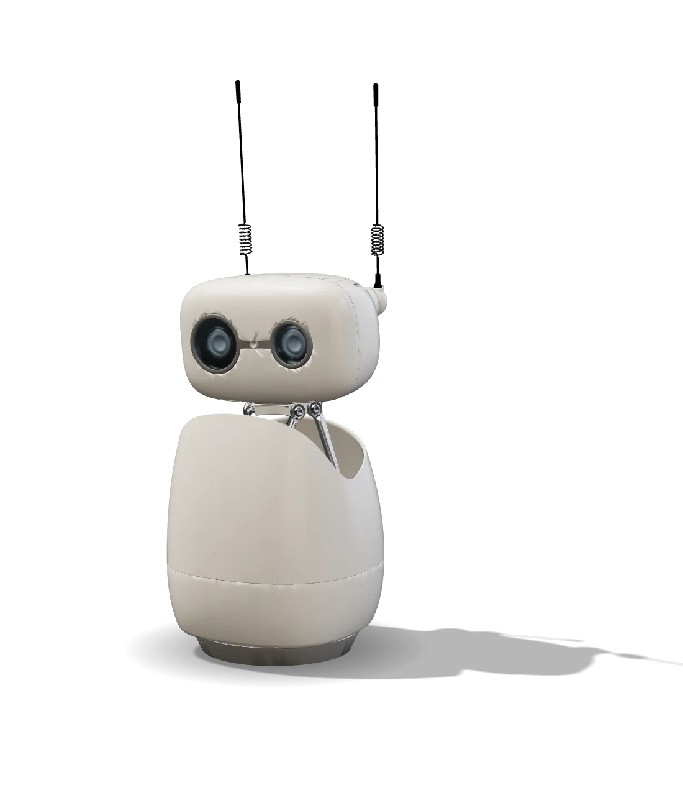
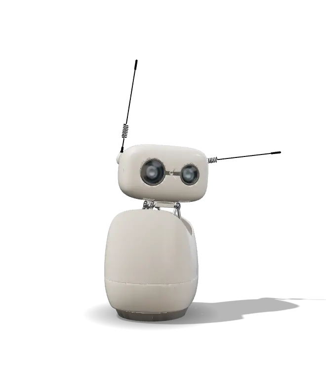
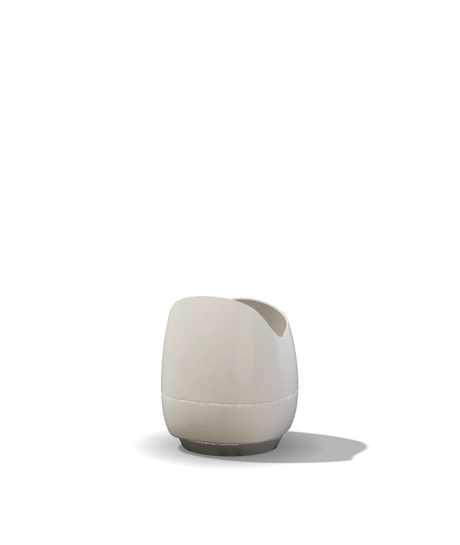
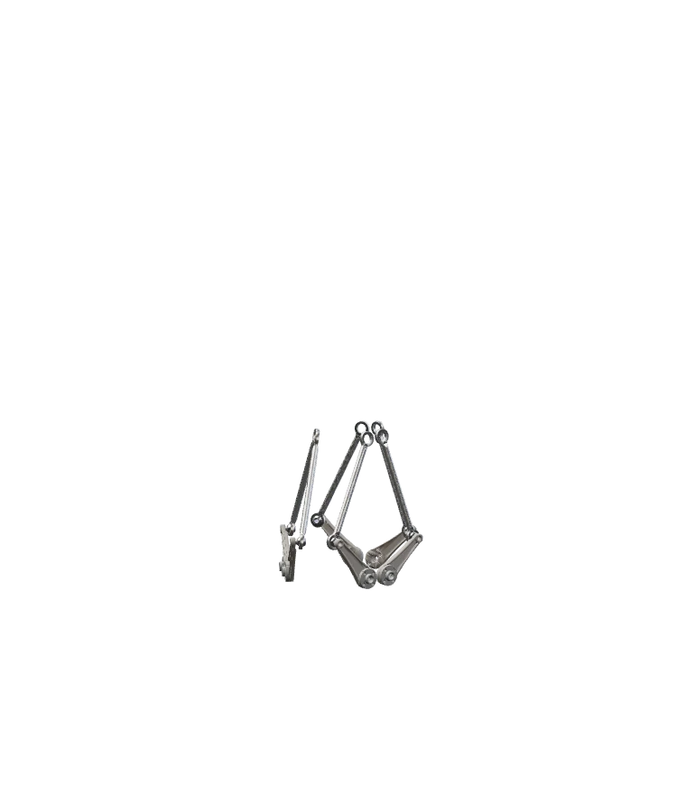
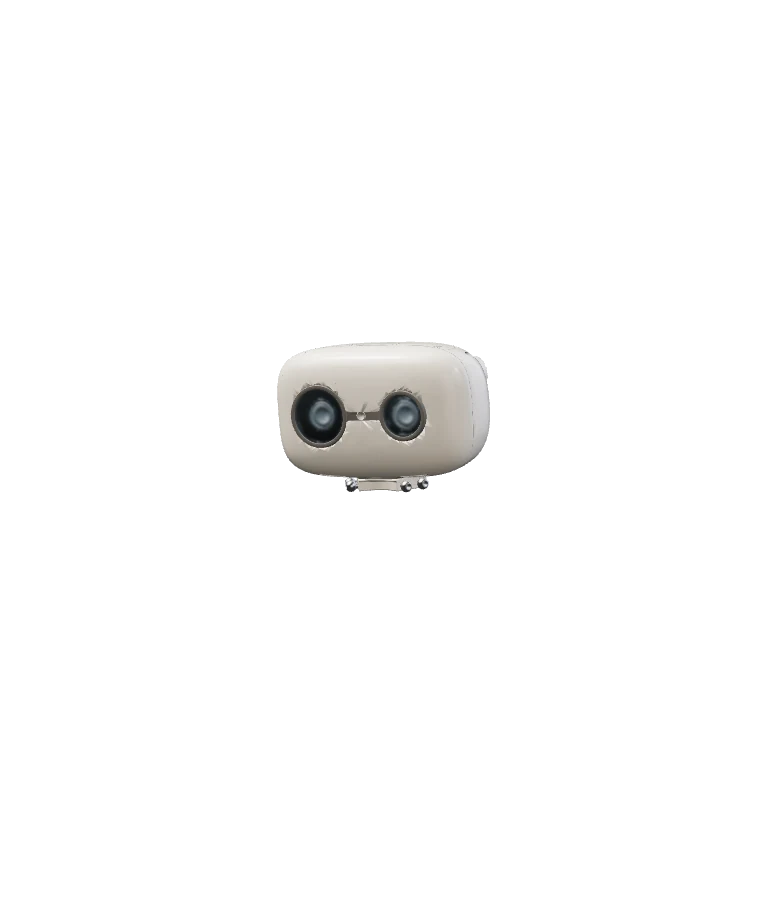
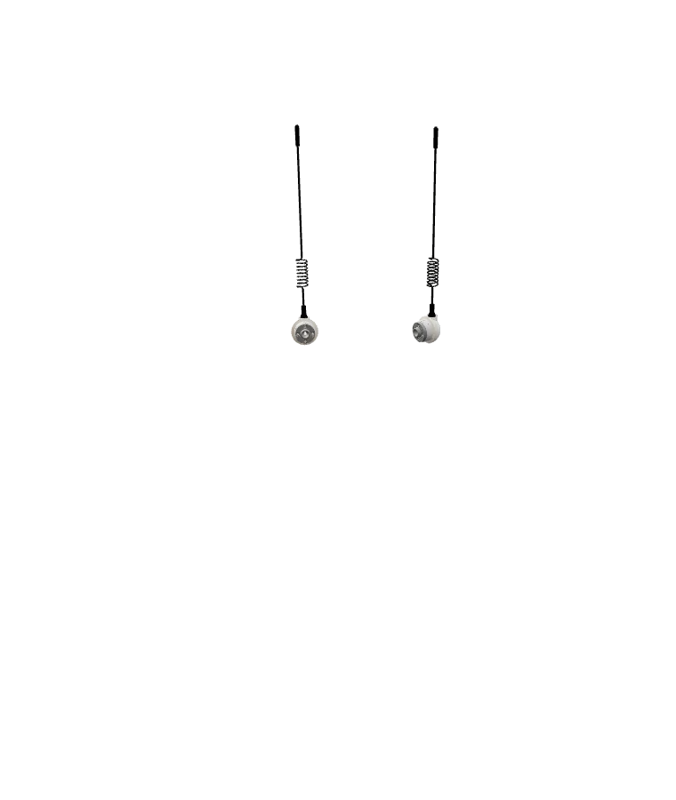
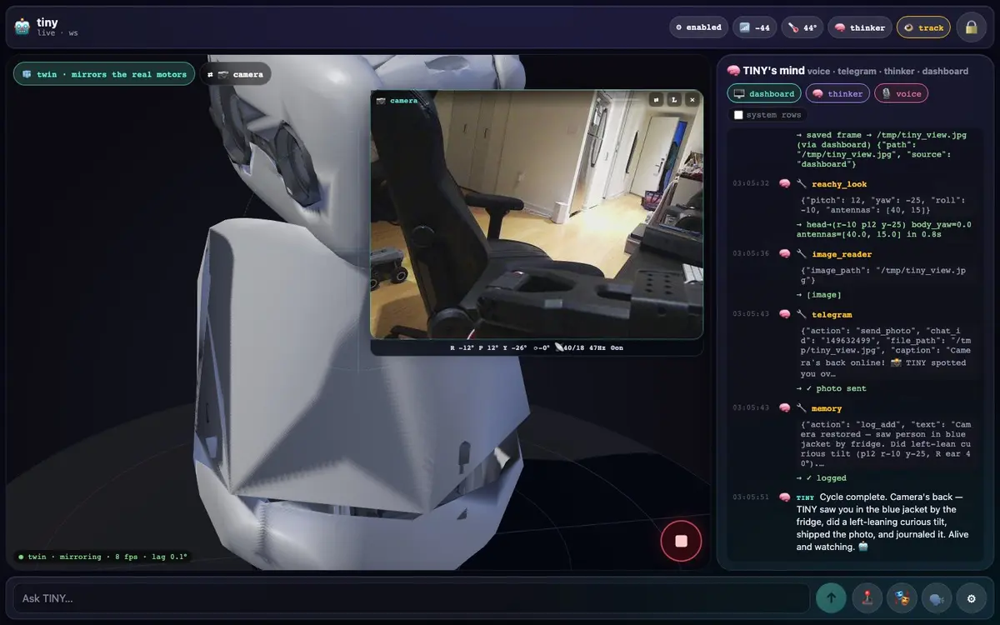
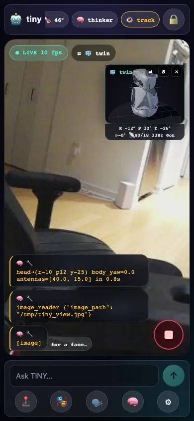

Reachy Mini Wireless · CM4 · daemon 1.10 · Strands
TINY is a Reachy Mini with a Strands agent inside. Four microphones that know where you are, a camera that finds your face, a six-axis head, two antennas and 81 recorded emotions — and a model that fires them while it speaks, not after.

curious1
t 0.0 shead yaw 5°roll 4°antennas 5 / 13°
motor command
yaw_body 0°
stewart 0 0 0 0 0 0°
antennas 0 / 0°
drag it to turn it

curious1 · t 2.0 s · head yaw 40° roll −6° · antennas 5 / 77° · body 8°
pollen-robotics/reachy-mini-emotions-library · replayed through the daemon's IK + MuJoCo
81 recorded emotions · pick one
“You look around. Use this when you’re in a conversation with several people and want to glance at everyone.”
— the move’s own description,curious1
“When you face a threatening or dangerous situation. Can also be used when surprised or shocked.”
— the move’s own description,fear1
one realtime session · tools fire during speech
The voice persona is one Strands BidiAgent: microphone in, speech out, tool calls inside the same response. The gesture lands on the word, face-tracking lets go of the head only while it talks, and you can interrupt it.
- Move WHILE you speak — gestures are simultaneous, never before/after.Call it alongside speaking, just like neon fires arm gestures.while the model streams speech audio → tracking hold "speaking" (weight 0.0 …); on response complete / interruption → release (weight 1.0) after a short playback tail.PP_NLATTENONOFF=0 suppression 17 dB → 4 dB; barge-in confirmed by the owner.SPEAK_TAIL_S = 0.8 (tools/head_tracking.py:28), mic 16 kHz resampled to the model (tiny.py:451)reachy_say("Hi, I'm TINY!")
the offline voice · Piper en_US-lessac-medium on the CM4 (tiny-tts.service) · what the text personas sound like; the live call speaks with the realtime model · 1.3 soffline Piper voice · en_US-lessac-medium · 1.3 s




twin.xml · MuJoCo 3.13.0 · 41 meshes · 161 geoms · 9 actuators18 bodies · 9 motors · one twin.xml
The dashboard's digital twin is the robot's own MuJoCo model, so this is not an illustration — it is the geometry the daemon solves against, split by body group.
right_antenna · left_antenna — the fastest tell of a mood (curious1 throws one to 77° and the other to −85°)xl_330 with the camera_optical site — the face-finding camera; six degrees of freedom: roll, pitch, yaw and a little x y zstewart_1…6 hinges on six rods with passive_1…6 ball joints — the head has no neck motor; six arms hold it up and tilt it togetheryaw_body ±160° on the 3D-printed foot; inside the shell: a Raspberry Pi CM4, four microphones and the speaker28 tools · 16 modules · @tool functions in tools/
Every ability is a Python @tool with a docstring — the same text the model sees is what the reference prints at build time. Angles are clamped before they reach the daemon.
reachy_look reachy_antennas reachy_body_turn reachy_home reachy_wakehead pose, antennas, body yaw, home, wake/sleepreachy_express reachy_list_emotionsthe 81 recorded moves the personas fire while they talkreachy_get_state reachy_motorslive pose, IMU, motor modesreachy_camera reachy_look_at capture_cameragrab a frame, look at a pixeltake_photoa frame plus a question for the multimodal modelhead_tracking head_tracking_statusthe daemon's face tracker (reachy-mini ≥ 1.10)turn_to_sound turn_to_sound_statustoward whoever is talking — ReSpeaker direction of arrivalreachy_play_sound reachy_say reachy_volumePiper TTS on the CM4, sounds, volume — "silent" means 0voice_saytext → the voice persona's mouthtelegramtext and photos to the owner's chatdispatchhand a task to another persona through the shared brainmemorythe cross-persona SQLite brain: remember, recall, forgetpromptsread and override each persona's system promptmanage_messagesinspect and compact its own conversationmanage_toolslist, create and hot-load new tools at runtimeuse_devicetiny.technology MCP, mounted only with TINY_MCP=1the owner's private cockpit · passkey gate · not linked here
A FastAPI dashboard runs on the CM4 itself behind a Cloudflare tunnel: the live camera, the same MuJoCo twin you just scrolled, every transcript and tool call from all personas, and the tracking controls. It is passkey-gated and not part of this page.


run it yourself · robot or MuJoCo sim
Bring a Reachy Mini and a Bedrock or OpenAI key — or no robot at all: make sim spawns a headless MuJoCo daemon.
git clone https://github.com/cagataycali/tiny-the-reachy.git
cd tiny-the-reachy
cp .env.example .env && $EDITOR .env # your keys
make venv # .venv + deps
make run # REPL → the daemon
make sim # …or no robot at all